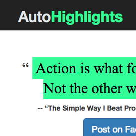
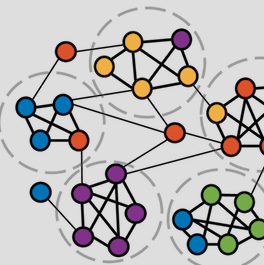

Data scientist, physicist, and computational neuroscientist

Simplifying the art of social media sharing
A view of the world from the Seattle Public Library
Modeling human decision making in natural disasters

Resolving network communities in the human brain